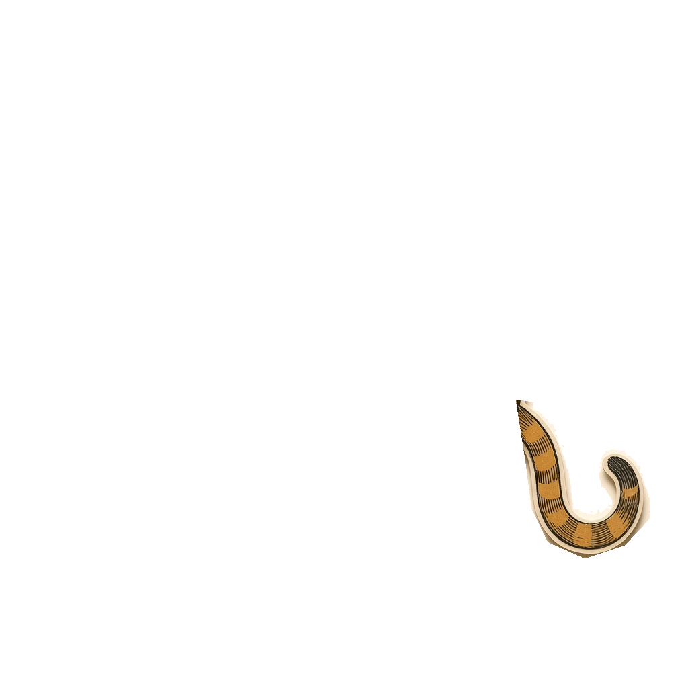
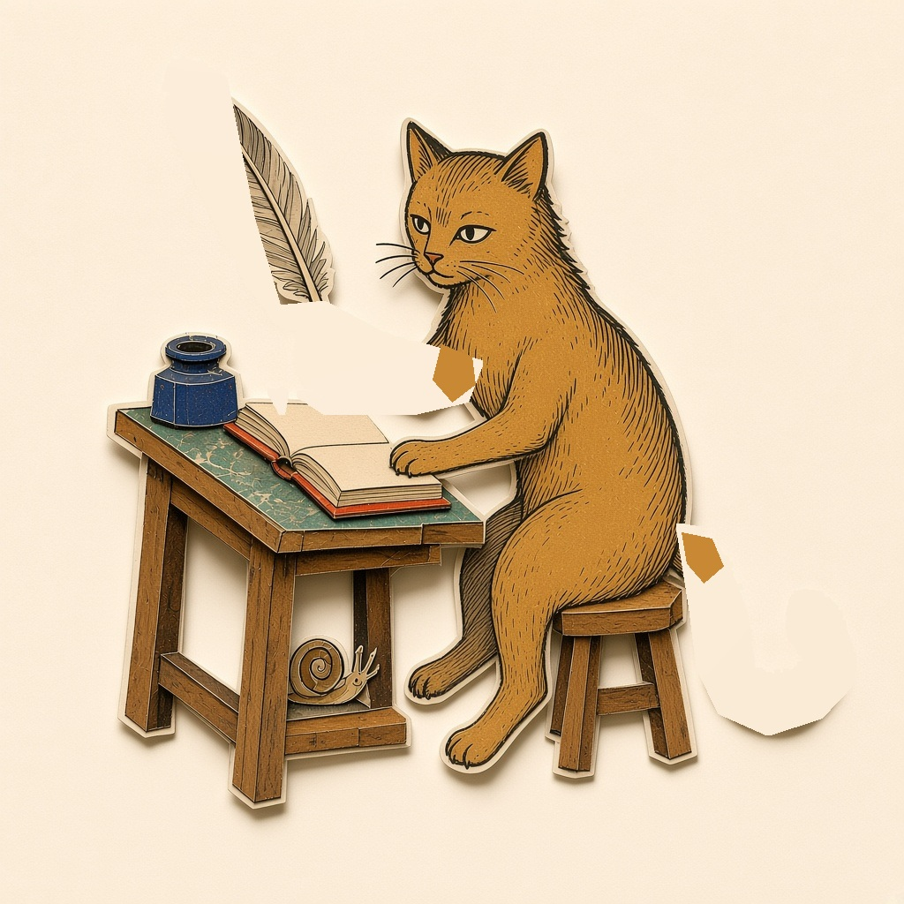
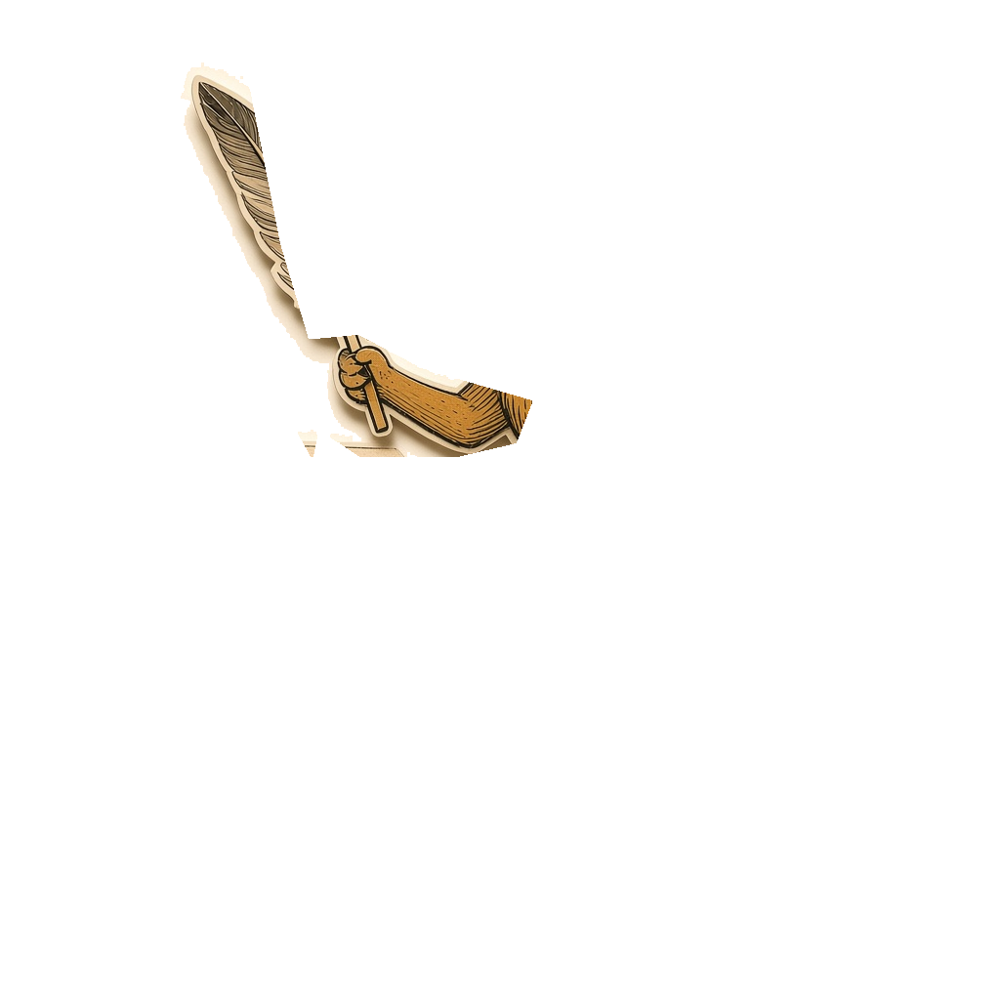

Writing
Still
Hold next frame



Focus-state motion test.
The forearm and quill move in held cutout frames; the tail makes one occasional stiff flick. No smooth mascot tweening. The snail remains still during focus.